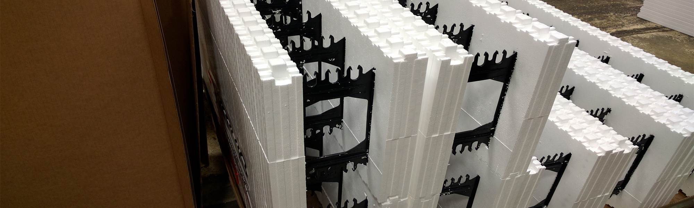

About Us
Diversified Plastics Corporation lives up to its name by molding a diversity of plastics from expandable foam polymers to injection molded engineering grade hard plastics.
Founded in Nixa, Missouri in early 1969, DPC began in an abandoned cheese factory. In 1972, DPC moved into injection molding and in 1973 built a new facility in Nixa. In 1976 it constructed a second molding facility near Centralia, Missouri and that same year won a Gold Award for Excellence in packaging design and service from the Society of Plastics Industry.
DPC expanded into proprietary molding in 1977 with its Diversa-Shield exterior insulation sheeting. In 1982, DPC partnered with Huntsman and General Electric to develop a new heat-resistant co-polymer for use in molding interior components for the automotive industry. By 1983 they were molding the first part from this revolutionary new material the Chevrolet Corvette dashboard. DPC stepped into another arena in 1986 molding lost foam patterns for the foundry industry. They quickly became one of the foremost molders of close-tolerance foam patterns.
In 1987, DPC became the first molder in the world certified to mold parts using General Electrics new GECET material. AT&T certified DPC as a Vendor Partner in 1989. In 1992 DPC's injection molding division was named a Certified Supplier for General Electric. That same year, DPC earned Ford Motor Company's highest quality award the Q1 rating. In I2006, DPC became ISO14001 certified. In 2007 DPC became ISO/TS16949 certified. In 2002, DPC began a new venture by molding IFCs Insulated Concrete Forms for the construction business.
Since its humble beginnings, Diversified Plastics has grown into a leader in the plastics industry in the field of innovations, quality molding, setting standards for service and timeliness, and in developing cutting edge technology.